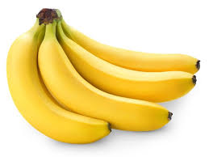

какой-то заголовок
текст
выделеный текст
курсив
подчёркнутый
перечёркнутый
уменьшить шрифт
надиндекс
подиндекс
выделение важных фрагментов курсивом
выделение особр важных фрагментов полужирным
выделение фрагмента подчёркиванием, когда требуется показать явно, что текст был вставлен после опубликовавания документа.
выделение фрагмента перечёркиванием, когда требуется показать явно, что текст был удалён после опубликовавания документа.
выделение цитат курсивом
отображение фрагментов программного кода моноширинным шрифтом

yandex
yandex
div
Ссылка на заголовок